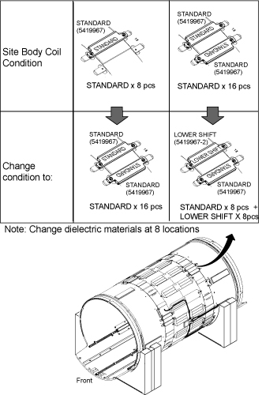
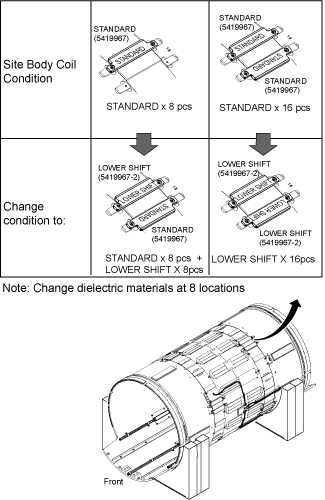
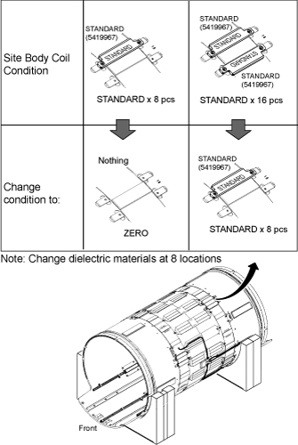
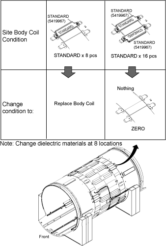

Illustration 61: Dielectric Material Order

128.15MHz ≤ fS11 or fS22 ≤ 128.4MHz: Increase dielectric material by one step.
Illustration 57: Increase dielectric material by one step

128.45MHz ≤ fS11 or fS22: Increase dielectric material by two steps.
Illustration 58: Increase dielectric material by two steps

127.4MHz ≤ fS11 or fS22 ≤ 127.65MHz: Decrease dielectric material by one step.
Illustration 59: Decrease dielectric material by one step

fS11 or fS22 ≤ 127.4MHz: Decrease dielectric material by two steps.
Illustration 60: Decrease dielectric material by two steps

| NOTE: | When replacing dielectric material to “Standard
x 8 pieces” or “Standard x 8 pieces + Lower Shift x8 pieces”,
the order is important. Follow the illustration below. Illustration 61: Dielectric Material Order
|